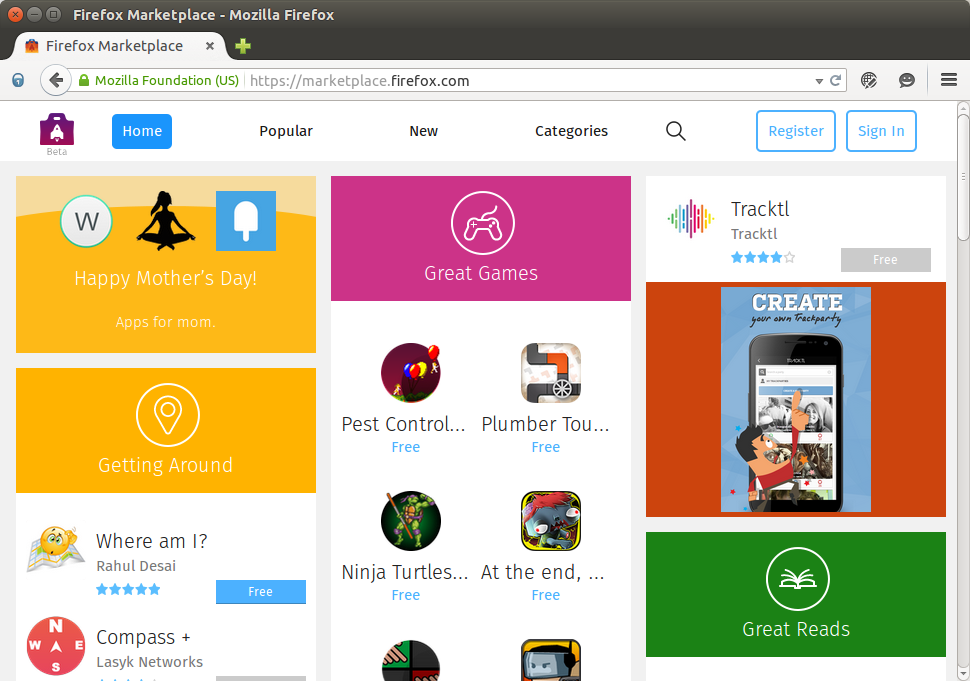
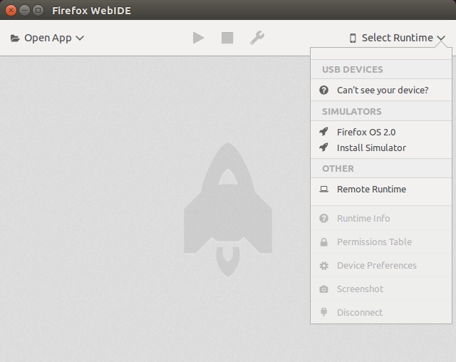

1. Overview and Development Setup¶
Welcome to a series of tutorials on getting started with Firefox OS app development.
I will assume that the reason you are here is to learn how to write Firefox OS apps. Well, if you are web developer, I can safely state that you already know how to write Firefox OS applications since what the Firefox OS device runs are web applications.
There is already enough material on the history of Firefox OS, the reasons for its existence, the devices that currently run the OS, and more available on the Web. I will not get into those details but briefly touch upon them so that we are on the same page. If you want to know more about why I want Firefox OS to succeed, here is my blog post titled Firefox OS – The Mobile Platform That Needs To Succeed.
1.1. What is Firefox OS? A Quick Overview, Please!¶
As with many things of this nature, it is a very good idea to start with the Firefox OS Wikipedia page to get a broad overview of what Firefox is and how it came to be.
1.2. Current List of Devices Support Firefox OS¶
The mobile phone space is rapidly changing. For a current list of the countries where Firefox OS phones can be purchased and which vendors sell them see this page.
1.3. What Do I Need to Learn?¶
Chances are that if you are web developer, you know everything there is to building Firefox OS apps. Use all the tools/frameworks that the web provides and it should work well. Remember these are days of infancy for Firefox OS, so do expect hiccups along the way.
Developing for Firefox OS means developing for the Web. You will need to be comfortable with HTML5, CSS and JavaScript language. That is the bare minimum you will need to know. The better you are at it, the easier it will be. Since Firefox runs Web applications, you can use all the cool JavaScript frameworks/libraries that you are used to. Nothing prevents you from using that.
Along the way, I shall try and cover some of the HTML5 JavaScript APIs but I strongly suggest that you be comfortable with basic Web technologies like HTML5/CSS/JavaScript. Codecademy has some great tutorials (HTML/CSS and JavaScript), if you want to learn about them.
1.4. Is There a Firefox Marketplace?¶
Yes, there is a Firefox Marketplace for your apps. This is similar to other vendors and if you are familiar with the submission process for them, you will find this no different.
{kind=link}
Few things to note here:
- There is no one-time registration fee or yearly fee for being a publisher on the Firefox Marketplace.
- You can have both paid and free applications.
- There is a review process after you submit your applications and on approval, it is listed as available in the Marketplace.
We shall cover the complete process of submitting your Firefox OS application to the Marketplace in a future episode. This will suffice for now.
1.5. Can We Get Going With the Installation of Dev Tools, Please?¶
Sorry, mate! There is no need for any special IDE for Firefox OS App Development. Feel free to use whatever tools you have in your toolbox for Web Development. As long as you are able to generate a standards based HTML5 Web app, you will be all set. All you really need is your good old text editor to get going.
In later episodes, I will show how we can take an existing Web application, do a little bit of manifest work and boom, the app is ready for Firefox OS. But more on that later.
1.6. Firefox OS Simulator¶
Firefox now comes with the WebIDE built-in. Just press Shift+F8 in an active Firefox window to launch it.

Clicking on Select Runtime gives a drop-down list.

Clicking Install Simulator loads available simulator versions.
{kind=link}
Firefox OS 2.0 is the most recent stable version, so let’s install that.

Returning to Select Runtime now shows the simulator in the menu.
{kind=link}
Clicking on Firefox OS 2.0 launches the simulator.

This marks the end of Episode 1. In the next episode, we shall look at writing our first application. We will stick to tradition and write Hello World on Firefox OS.